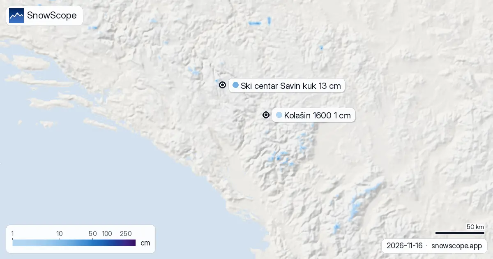

Y a-t-il de la neige au Monténégro ? Hauteurs et neige fraîche le 16 novembre 2026
La surface blanche au Monténégro atteint environ 80 km² aujourd'hui, 50 km² de moins qu'hier. Autrement dit, 1 % du relief cartographié est blanc.
Consultez les prévisions neige en temps réel pour Ski centar Savin kuk sur l'application SnowScopeHauteurs de neige, alertes poudreuse et carte 3D, gratuitement.
Quelle part du pays est blanche
Il y a sept jours, on comptait 390 km², soit 310 km² de plus qu'aujourd'hui. Pour un paysage blanc, visez 2 100 m et plus haut.
| Station | Hauteur de neige | Neige fraîche, 72 h | Attendu, jours suivants | Sommet |
|---|---|---|---|---|
| Ski centar Savin kuk | 13 cm | 15 cm | 4 cm | 2 175 m |
| Kolašin 1600 | 1 cm | 3 cm | 0 cm | 2 028 m |
Hauteur de neige selon l'altitude
Selon l'altitude, le tableau est le suivant : entre 1 500 et 2 000 m, moins de 1 cm en moyenne, 1 % couverts; entre 2 000 et 2 500 m, 2 cm en moyenne, 49 % couverts.
Conditions de ski
La neige recule vers le haut : misez sur les remontées d'altitude et évitez les pistes basses.
Surveillez les prévisions : la neige à venir peut vite changer la donne.
Neige fraîche sur trois jours
Les cumuls sur trois jours culminent à 4 cm, autour de the Prokletije, Durmitor et Bjelasica.
Au moins 5 cm sont tombés sur quelque 70 km².
Les stations les mieux enneigées
En tête de liste, Ski centar Savin kuk affiche 13 cm.
Juste derrière : Kolašin 1600 (1 cm).
Ski centar Savin kuk a reçu 15 cm en trois jours et pourrait gagner 4 cm d'ici jeudi 19 novembre.
À Kolašin 1600 : 3 cm de neige fraîche en trois jours, 0 cm de plus attendus d'ici jeudi 19 novembre.
2 des 3 stations suivies au Monténégro ont de la neige sur le haut du domaine.
De la neige en route ?
La semaine à venir pourrait apporter jusqu'à 15 cm, dont 0 cm dans les trois prochains jours.
Le lundi 23 novembre se détache, avec jusqu'à 9 cm en une journée.
La deuxième semaine ajoute jusqu'à 22 cm là où il neige le plus.
Conseils aux skieurs
- Vérifiez l'ouverture des remontées avant de partir.
- La neige de début de saison est fine sur les cailloux : privilégiez les pistes damées.
- Au-dessus de la forêt, la neige peut être ventée : attention aux crêtes.
À propos de ces chiffres
Les hauteurs de neige des stations sont la neige la plus épaisse sur le haut du domaine, d'après le modèle de neige SnowScope (environ 1 km, calcul du 16 novembre) ; ce sont des estimations pour une zone, pas une mesure en un point. Les valeurs des stations de mesure sont mesurées à la date indiquée. Les prévisions peuvent changer. Consultez toujours le bulletin d'avalanche officiel avant le hors-piste.
Citer ce bulletin
Pour la recherche, l'enseignement ou la presse : chiffres et graphiques réutilisables librement sous CC BY 4.0 avec cette citation.
SnowScope (2026), Y a-t-il de la neige au Monténégro ? Hauteurs et neige fraîche le 16 novembre 2026, https://snowscope.app/blog/fr/2026/11/montenegro-snow-report-16-november-2026.html, consulté le 2026-11-16
SnowScope (Atlas Labs). (2026, November 16). Y a-t-il de la neige au Monténégro ? Hauteurs et neige fraîche le 16 novembre 2026. SnowScope snow reports. https://snowscope.app/blog/fr/2026/11/montenegro-snow-report-16-november-2026.html
BibTeX
@misc{snowscope2026montenegrosnowreport16no,
author = {{SnowScope (Atlas Labs)}},
title = {Y a-t-il de la neige au Monténégro ? Hauteurs et neige fraîche le 16 novembre 2026},
year = {2026},
month = nov,
howpublished = {\url{https://snowscope.app/blog/fr/2026/11/montenegro-snow-report-16-november-2026.html}},
note = {Published 2026-11-16 20:42 UTC; accessed 2026-11-16}
}· CC BY 4.0 · Méthodes, données et outils →
Suivre Ski centar Savin kuk
Gratuit : un message quand la neige arrive, et la météo chaque matin.